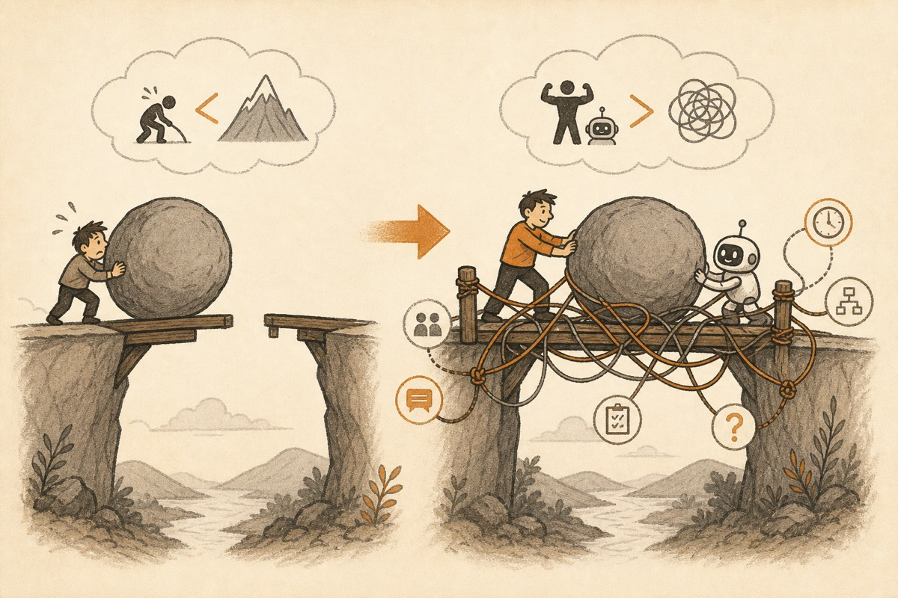
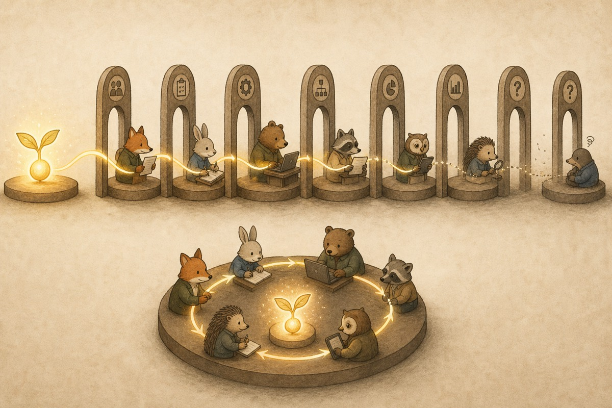

Chapter 3 / 6 parts
The Shift in the Main Contradiction
As action units become stronger, the system increasingly gets stuck not on “nobody can do it,” but on “too many interfaces slow everything down.”
Chapter 3
After Division of Labor: Chapter 3
Division or Friction?
The first two chapters established two points. Division of labor was historically powerful, and it always carried friction costs. Now the central question appears: why do those costs become more visible today?
The answer is not simply “because agents arrived.” The real change is lower in the stack. Agent systems change the structure of productivity.
In the past, the main constraint was insufficient capability inside the single action unit, so tasks had to be split. Today, in many settings, the capability boundary of the action unit is expanding and execution cost is falling. Fine-grained specialization built to compensate for weakness now exposes its friction.
1. The action unit changes first
The easiest mistake is to start with grand conclusions: all jobs will be replaced, firms will vanish, or organizations will be rewritten overnight. A better starting point is more basic: the action unit has changed.
An action unit is the smallest production subject that can receive a goal, understand context, call tools, complete a task, and deliver an output. In the past, this was usually a worker. The worker’s capability boundary was narrow, so organizations had to split problems and assemble capabilities.
With stronger models, toolchains, and agent systems, the action unit is no longer just a bare human. It increasingly becomes human + model + tools + workflow.
A person who once handled only one link can now understand materials faster, draft outputs, call scripts, check errors, format results, and cross steps that used to belong to separate roles. That person is not omniscient, but the effective capability radius is larger.
This matters because deep division of labor was necessary mainly because action units were weak. Once action units become stronger, organizations must recalculate the task boundary. A task that once needed five links may now need two. Sometimes it may need one continuous loop.
2. When execution becomes cheaper, the marginal gain from splitting declines
Division of labor is not good or bad in itself. It is worth doing when the added efficiency gain from splitting a task is larger than the added friction cost.
In the past, execution itself was expensive, so the marginal gain from specialization was high. Giving each link to a specialized worker often produced clear improvements.
When agents make many execution actions cheaper, the structure changes. Drafting a basic document, doing an initial analysis, generating a structured plan, writing sample code, converting formats, or running a routine check becomes easier to call or assist.
Further splitting then brings less new gain. What it adds may simply be another handoff, another explanation, another review cycle.
Specialized capability still matters. The question is whether every capability must still appear as a separate role, separate interface, and separate approval point.
3. The main contradiction shifts

In the old organizational world, the core anxiety was that tasks were too complex and individuals were too limited. Splitting, training, professionalizing, and role-building were the first answer.
In more digital, symbolic, and information-heavy work, that premise is loosening. The problem is less often “nobody can do this.” It is increasingly “someone could do this, but the system has cut the work into too many pieces.”
A task may be divided into requirement writing, solution design, execution, checking, reporting, approval, and review. Each piece may be manageable. The chain as a whole becomes slow because of waiting, re-explaining, confirming, and responsibility splitting.
The scarce thing shifts. Production capability becomes less scarce. Context continuity, goal coherence, and thin interfaces become more scarce.
This is the shift in the main contradiction: from local capability shortage to excessive coordination friction. The old optimal strategy was to split further. The new optimal strategy often starts by asking where unnecessary splitting should be removed.
4. Scarcity moves from information to continuity of intention

Industrial division of labor cared a lot about transmitting standardized information. In the Agent era, preserving intention may become more important.
When a task is split into many links, what travels between links is usually compressed information, not full intention. A requirements document carries some requirements, but not all hidden judgments. A design carries structure, but not every worry. A report carries results, but loses much of the hesitation and context behind them.
When a stronger action unit can work across a longer chain, continuity of intention becomes valuable. A human-agent unit that keeps the goal, standards, preferences, and tradeoffs in context can avoid many losses caused by translation between roles.
The gain often comes less from knowing more facts and more from losing less of the original intent.
5. The shift will not happen everywhere at once
This claim needs restraint. The shift does not hit every industry, task, or organization at the same speed.
It appears earliest in work that is highly digital, symbolic, context-encodable, and deliverable through information systems: writing, analysis, coding, research, operations, parts of design, parts of law, and parts of consulting.
Physical-world work changes more slowly. Hardware, field operations, heavy assets, real-world liability, and safety constraints still require division of labor for a long time.
Even in the most affected areas, expertise still exists. What changes is the mapping between expertise and organizational splitting. A capability can remain valuable without needing to be isolated as its own interface.
6. Conclusion: the problem shifts from too little division to too much division
The Agent era changes more than the tool box. It changes the axis of the efficiency problem.
In the past, the main contradiction was that the action unit was too weak. Complex tasks needed deeper division of labor. Today, in more and more settings, the action unit becomes stronger, execution costs fall, and the old system’s hidden friction becomes the bottleneck.
Division of labor does not fail everywhere. But in some settings, over-specialization begins to turn from an efficiency mechanism into a friction mechanism.
Once this claim holds, the next question becomes organizational: what should happen to roles, hierarchy, handoff, and firm boundaries?